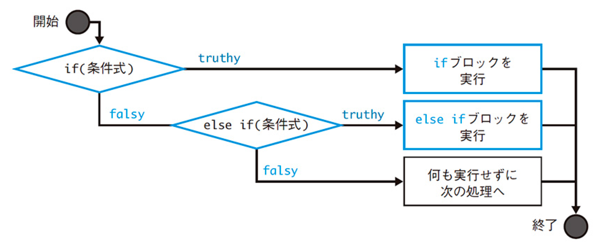

3. if文
3-1. 基本形
if(条件式){
ifブロック //条件式に合致したときに行う処理
}

- 【例】
-
let fruit = 'りんご';
if(fruit == 'りんご'){
console.log('りんごがあります。');
}
if(fruit == 'ばなな'){
console.log('ばなながあります。');
}
- 【条件式の結果をコンソールに表示してみる】
-
let fruit = 'りんご';
console.log(fruit == 'りんご');
console.log(fruit == 'ばなな');
3-2. 真偽値
真偽値は、true（真）またはfalse（偽）という値を取り、if文などの条件式と合わせて使われる。
if(true){
console.log('条件式はtrueです。');
}
3-3. 比較演算子
条件分岐のカッコ内「条件式」 を設定するには、「比較演算子」を理解しておく必要がある。
- 【等価演算子】
-
| 演算子 |
用途 |
例 |
結果 |
| A == B |
AとBが等しいことを確認 |
1 == 1 |
true |
| 1 == '1' |
true |
| A === B |
AとBが厳密に等しいことを確認 |
1 === 1 |
true |
| 1 === '1' |
false |
| A != B |
AとBが等しくないことを確認 |
1 != 2 |
true |
| 1 != '1' |
false |
| A !== B |
AとBが厳密に等しくないことを確認 |
1 !== 2 |
true |
| 1 !== '1' |
true |
if (1 == '1') {
console.log('厳密には等しくないけど「true」');
}
if (1 === '1') {
console.log('厳密には等しくないから「false」');
}
- 【関係演算子】
-
| 演算子 |
用途 |
例 |
結果 |
| A < B |
AがBよりも小さいことを確認 |
1 < 2 |
true |
| A > B |
AがBよりも大きいことを確認 |
1 > 1 |
false |
| A <= B |
AがB以下であることを確認 |
1 <= 2 |
true |
| A >= B |
AがB以上であることを確認 |
1 >= 1 |
true |
☆練習
変数に西暦を代入し、「令和」だった場合にコンソールに「令和！」と表示するプログラムを考える。
※2018年までが平成、2019年から令和
let year = 2024;
if(){
}
let year = 2024;
if (year >= 2019) {
console.log(`令和！`);
}
★応用
変数に西暦を代入し、「令和」だった場合にコンソールに「令和◯年！」と表示するプログラムを考える。
※2019年が令和1年
let year = 2024;
if (year > 2018) {
console.log(`令和${year - 2018}年！`);
}
3-4. if...else文
if(条件式){
ifブロック //条件式に合致したときに行う処理
}else{
elseブロック //条件式に合致しないときに行う処理
}

- 【例】
-
let fruit = 'りんご';
if(fruit == 'ばなな'){
console.log('ばなながあります。');
}else{
console.log('ばなな以外があります。');
}
☆練習
変数に任意の数字を代入し、「偶数」だった場合にコンソールに「偶数！」、それ以外だった場合に「奇数！」と表示するプログラムを考える。
let num = 10;
if(){
}else{
}
let num = 7;
if (num % 2 == 0) {
console.log(`偶数！`);
} else {
console.log(`奇数！`);
}
3-4. if...else文のチェーン
if...else文をチェーン（鎖）のようにつなげて記述することで、複数の条件式を使った分岐を作成できる。
if(条件式A){
ifブロック //条件式Aに合致したときに行う処理
}else if(条件式B){
else ifブロック //条件式Bに合致しないときに行う処理
}else if(条件式C){
else ifブロック //条件式Cに合致しないときに行う処理
}
//最後にelseブロックを追加することも可能
if(条件式A){
ifブロック //条件式Aに合致したときに行う処理
}else if(条件式B){
else ifブロック //条件式Bに合致しないときに行う処理
}else{
elseブロック //上記の条件式全てに合致しないときに行う処理
}

- 【例】
-
let fruit = 'みかん';
if(fruit == 'ばなな'){
console.log('ばなながあります。');
}else if(fruit == 'りんご'){
console.log('りんごがあります。');
}else if(fruit){
console.log('フルーツがあります。');
}else{
console.log('フルーツがありません。');
}
☆練習
変数に西暦を代入し、「令和◯年！」「平成◯年！」「昭和◯年！」「大昔！」「未来！」と表示するプログラムを考える。
- 大昔：〜1925
- 昭和：1926〜1989
- 平成：1990〜2018
- 令和：2019〜2024
- 未来：2025〜
let year = 2024;
if(){
}
let year = 1925;
if (year <= 1925) {
console.log(`大昔！`);
} else if (year <= 1989) {
console.log(`昭和${year - 1925}年！`);
} else if (year <= 2018) {
console.log(`平成${year - 1989}年！`);
} else if (year <= 2024) {
console.log(`令和${year - 2018}年！`);
} else {
console.log(`未来！`);
}
★応用「クリックゲーム（click.html）」
見本
- 【条件】
-
- 画像をクリックする度にHPが減る
- HPが「0」になったら終了、それ以上は減らない
- 【画像】
-
const monster = document.getElementById('monster');
const hp = document.getElementById('hp');
let count = 10;
hp.innerHTML = `HP:${count}`;
monster.addEventListener('click', function () {
if (count > 0) {
hp.innerHTML = `HP:${count -= 1}`;
}
});
★応用「クリックゲームその2（click2.html）」
見本
- 【条件】
-
- 画像をクリックする度に数字が増える
- 10回クリックするたびに「○回達成、おめでとう！」にテキストを変更する
- 30回クリックすると「30回クリア！おめでとう！」にテキストを変更し、それ以上は数字が増えない
- 「A % B」を使った書き方
-
const monster = document.getElementById('monster');
const hp = document.getElementById('hp');
let count = 0;
let clear = 30; //クリックできる上限
hp.innerHTML = `${count}回`;
monster.addEventListener('click', function () {
if (count < clear) {
count += 1;
if (count == clear) {
hp.innerHTML = `${count}回クリア、おめでとう！`;
} else if (count % 10 == 0) {
hp.innerHTML = `${count}回達成、おめでとう！`;
} else {
hp.innerHTML = `${count}回`;
}
}
});